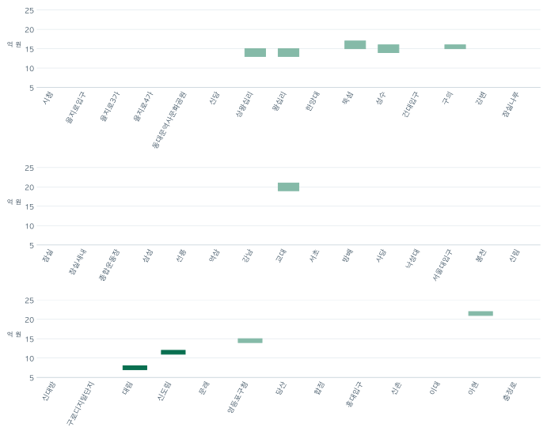

호선별로 본 아파트 · 4 / 4
2호선 한 바퀴에서 84형 가격대는 어디에서 달라질까?
2호선 순환 본선 43개 역을 정차 순서대로 놓고 역 700m 안의 84형 매매 중앙값을 비교합니다. 표시가 가능한 열 곳의 거래와 기여 단지도 살펴봅니다.
분석 기간 · 2025년 7월~2026년 6월 2호선 본선 700m 안 84형 매매 | 자료 기준일 · 2026-10-29
2호선 순환 본선에서 대림과 신도림은 이웃 역입니다. 역에서 직선 700m 안의 84형 매매 중앙값은 대림이 7억 원 이상 8억 원 미만, 신도림이 11억 원 이상 12억 원 미만이었습니다. 같은 노선을 이용하는 두 역에서도 비교에 들어간 집은 달랐습니다.
시청에서 을지로입구 방향으로 본선 43개 역을 읽습니다
그림은 역의 정차 순서에 맞춰 2025년 7월~2026년 6월의 84형 가격 구간을 놓았습니다. 표본과 표시 조건을 모두 충족한 10개 역에 가격 띠를 그렸습니다. 띠가 없는 역도 정차 순서에 남겼습니다. 표에서 거래와 기여 단지의 구간, 거래가 가장 많았던 단지를 제외한 결과를 함께 볼 수 있습니다.

가격 띠가 없는 역의 사유는 아래 표에서 확인할 수 있습니다.
2호선 본선 43개 역의 가격과 거래 펼치기
| 역 | 84형 매매 중앙값 | 거래 | 단지 | 최다 거래 단지 제외 후 | 가격 표시 사유 |
|---|---|---|---|---|---|
| 시청 | 표시 보류 | 표시 보류 | 표시 보류 | 표시 보류 | 거래·단지 조건 미충족 |
| 을지로입구 | 표시 보류 | 표시 보류 | 표시 보류 | 표시 보류 | 거래·단지 조건 미충족 |
| 을지로3가 | 표시 보류 | 표시 보류 | 표시 보류 | 표시 보류 | 거래·단지 조건 미충족 |
| 을지로4가 | 표시 보류 | 표시 보류 | 표시 보류 | 표시 보류 | 거래·단지 조건 미충족 |
| 동대문역사문화공원 | 표시 보류 | 표시 보류 | 표시 보류 | 표시 보류 | 거래·단지 조건 미충족 |
| 신당 | 표시 보류 | 표시 보류 | 표시 보류 | 표시 보류 | 거래·단지 조건 미충족 |
| 상왕십리 | 13억 원 이상 15억 원 미만 | 180건 이상 200건 미만 | 15곳 이상 20곳 미만 | 같은 가격 구간 | 표시 |
| 왕십리 | 13억 원 이상 15억 원 미만 | 80건 이상 100건 미만 | 15곳 이상 20곳 미만 | 같은 가격 구간 | 표시 |
| 한양대 | 표시 보류 | 표시 보류 | 표시 보류 | 표시 보류 | 거래·단지 조건 미충족 |
| 뚝섬 | 15억 원 이상 17억 원 미만 | 60건 이상 80건 미만 | 10곳 이상 15곳 미만 | 같은 가격 구간 | 표시 |
| 성수 | 14억 원 이상 16억 원 미만 | 40건 이상 60건 미만 | 10곳 이상 15곳 미만 | 같은 가격 구간 | 표시 |
| 건대입구 | 표시 보류 | 표시 보류 | 표시 보류 | 표시 보류 | 거래·단지 조건 미충족 |
| 구의 | 15억 원 이상 16억 원 미만 | 40건 이상 60건 미만 | 10곳 이상 15곳 미만 | 같은 가격 구간 | 표시 |
| 강변 | 표시 보류 | 표시 보류 | 표시 보류 | 표시 보류 | 거래·단지 조건 미충족 |
| 잠실나루 | 표시 보류 | 표시 보류 | 표시 보류 | 표시 보류 | 거래·단지 조건 미충족 |
| 잠실 | 표시 보류 | 표시 보류 | 표시 보류 | 표시 보류 | 거래·단지 조건 미충족 |
| 잠실새내 | 표시 보류 | 표시 보류 | 표시 보류 | 표시 보류 | 거래·단지 조건 미충족 |
| 종합운동장 | 표시 보류 | 표시 보류 | 표시 보류 | 표시 보류 | 거래·단지 조건 미충족 |
| 삼성 | 표시 보류 | 표시 보류 | 표시 보류 | 표시 보류 | 거래·단지 조건 미충족 |
| 선릉 | 표시 보류 | 표시 보류 | 표시 보류 | 표시 보류 | 거래·단지 조건 미충족 |
| 역삼 | 표시 보류 | 표시 보류 | 표시 보류 | 표시 보류 | 거래·단지 조건 미충족 |
| 강남 | 표시 보류 | 표시 보류 | 표시 보류 | 표시 보류 | 거래·단지 조건 미충족 |
| 교대 | 19억 원 이상 21억 원 미만 | 40건 이상 60건 미만 | 15곳 이상 20곳 미만 | 표시 보류 | 표시 |
| 서초 | 표시 보류 | 표시 보류 | 표시 보류 | 표시 보류 | 거래·단지 조건 미충족 |
| 방배 | 표시 보류 | 표시 보류 | 표시 보류 | 표시 보류 | 거래·단지 조건 미충족 |
| 사당 | 표시 보류 | 표시 보류 | 표시 보류 | 표시 보류 | 기존 역별 비교 참조 |
| 낙성대 | 표시 보류 | 표시 보류 | 표시 보류 | 표시 보류 | 거래·단지 조건 미충족 |
| 서울대입구 | 표시 보류 | 표시 보류 | 표시 보류 | 표시 보류 | 거래·단지 조건 미충족 |
| 봉천 | 표시 보류 | 표시 보류 | 표시 보류 | 표시 보류 | 거래·단지 조건 미충족 |
| 신림 | 표시 보류 | 표시 보류 | 표시 보류 | 표시 보류 | 거래·단지 조건 미충족 |
| 신대방 | 표시 보류 | 표시 보류 | 표시 보류 | 표시 보류 | 거래·단지 조건 미충족 |
| 구로디지털단지 | 표시 보류 | 표시 보류 | 표시 보류 | 표시 보류 | 거래·단지 조건 미충족 |
| 대림 | 7억 원 이상 8억 원 미만 | 60건 이상 80건 미만 | 15곳 이상 20곳 미만 | 같은 가격 구간 | 표시 |
| 신도림 | 11억 원 이상 12억 원 미만 | 180건 이상 200건 미만 | 20곳 이상 25곳 미만 | 같은 가격 구간 | 표시 |
| 문래 | 표시 보류 | 표시 보류 | 표시 보류 | 표시 보류 | 거래·단지 조건 미충족 |
| 영등포구청 | 14억 원 이상 15억 원 미만 | 160건 이상 180건 미만 | 20곳 이상 25곳 미만 | 같은 가격 구간 | 표시 |
| 당산 | 표시 보류 | 표시 보류 | 표시 보류 | 표시 보류 | 기존 역별 비교 참조 |
| 합정 | 표시 보류 | 표시 보류 | 표시 보류 | 표시 보류 | 거래·단지 조건 미충족 |
| 홍대입구 | 표시 보류 | 표시 보류 | 표시 보류 | 표시 보류 | 거래·단지 조건 미충족 |
| 신촌 | 표시 보류 | 표시 보류 | 표시 보류 | 표시 보류 | 거래·단지 조건 미충족 |
| 이대 | 표시 보류 | 표시 보류 | 표시 보류 | 표시 보류 | 표시 가격대의 거래·단지 조건 미충족 |
| 아현 | 21억 원 이상 22억 원 미만 | 140건 이상 160건 미만 | 15곳 이상 20곳 미만 | 같은 가격 구간 | 표시 |
| 충정로 | 표시 보류 | 표시 보류 | 표시 보류 | 표시 보류 | 거래·단지 조건 미충족 |
이웃한 대림과 신도림은 다른 가격대였습니다
대림과 신도림의 비교에는 구로구와 영등포구의 거래가 함께 들어왔습니다. 두 역에서 가장 많이 거래된 단지를 각각 제외해도 나머지 거래의 중앙값은 원래 표시 구간에 들었습니다. 이 차이는 해당 기간 두 역의 700m 안에서 계약된 집들을 비교한 결과입니다. 그 집들의 면적대만 맞췄기 때문에 단지 연식이나 규모가 같다고 볼 수는 없습니다.
아현은 21억 원 이상 22억 원 미만이었습니다. 마포구와 서대문구의 거래가 함께 들어온 집단입니다. 같은 역을 이용하더라도 주택을 고를 때는 계약된 단지와 직접 비교할 후보를 따로 확인해야 합니다.
가격 띠가 없는 역은 표의 사유를 확인하세요
거래 30건과 단지 5곳을 확보하고, 한 단지의 거래가 전체의 20% 이하인 경우를 먼저 골랐습니다. 그 뒤에 표시할 가격대 안에도 거래 10건과 단지 5곳이 들어오는지 확인했습니다. 사당과 당산은 기존 역별 비교와 거래 집단이 크게 겹쳐 이번 가격표의 표시를 보류했습니다. 빈칸은 가격이 0원이라는 뜻이 아닙니다.
자료와 집계 방법
84형은 전용 25·26평형을 묶은 이름입니다. 2025년 7월~2026년 6월 정제 매매에서 토지임대부를 제외했습니다. 현재 2호선 역사 좌표에서 단지의 모든 확인 신고 위치까지 직선 700m 이하인 경우를 포함했습니다. 두 역에 모두 가까운 단지의 거래는 각각의 역에 포함됩니다. 성수지선과 신정지선은 순환 본선 그림의 범위 밖입니다.
최다 거래 단지가 여럿이면 한 곳씩 빼고 각 결과를 확인했습니다. 하나라도 제외 후 표본 조건이 맞지 않으면 표에 제외 후 결과를 보류했습니다. 직선거리와 실제 출입구를 잇는 길은 별도로 확인하세요.
노선 범위는 서울시 지하철 현황, 거래는 국토교통부 실거래가 공개시스템을 사용했습니다. 기존 역별 가격 비교는 모든 노선에서 최근접 역을 하나씩 배정했습니다.
분석·집필: 파파펭귄 (Nobot Kang). 에이전트로 역 순서와 집계 대조 및 초안 검토를 보조했습니다.